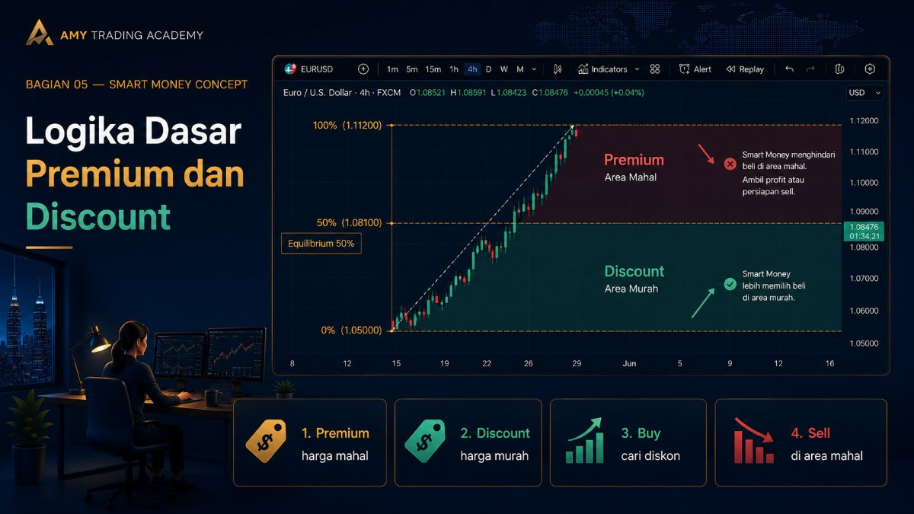
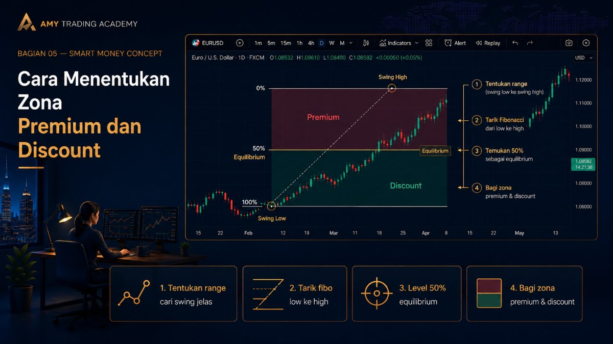
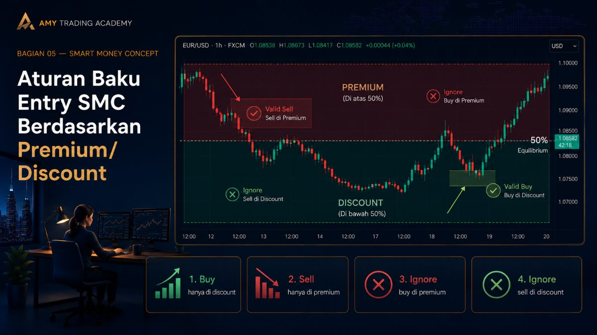
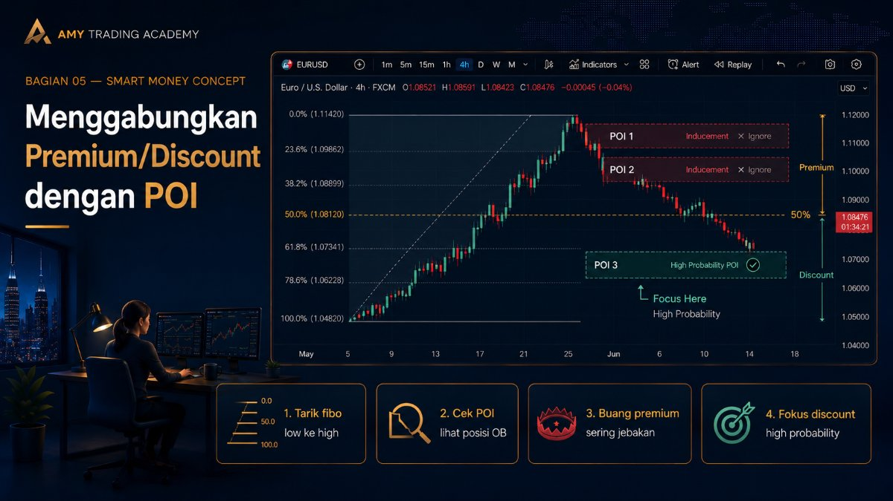
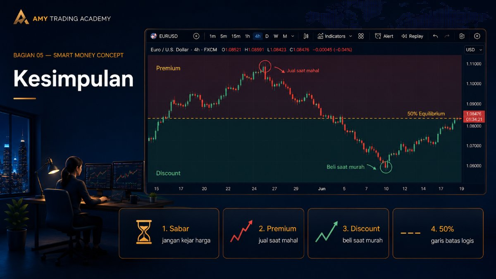

Premium dan Discount

Pernahkah kamu pergi ke toko untuk membeli sepatu yang sangat kamu inginkan, tapi saat melihat harganya yang selangit, kamu memutuskan, "Ah, kemahalan. Mending nunggu diskon aja deh"?
Nah, prinsip yang sama persis berlaku di pasar finansial, termasuk trading forex dan gold. Institusi finansial besar (Smart Money) sama seperti ibu-ibu yang sedang belanja di mall: Mereka tidak mau beli barang kalau harganya sedang mahal (Premium), dan mereka tidak mau jual barang kalau harganya sedang murah (Discount).
Di bab ini, kita akan membahas salah satu konsep paling logis dan mendasar di SMC: Premium dan Discount.
Logika Dasar Premium dan Discount
Market bergerak dalam bentuk ayunan (swing) yang membentuk tren. Ketika harga sedang dalam tren naik (Bullish), kita tentu ingin mencari peluang untuk Buy. Namun, kesalahan terbesar retail trader adalah mereka membeli saat harga sudah melambung terlalu tinggi, hanya karena takut ketinggalan kereta (FOMO).
Bagi Smart Money, harga yang sudah melambung tinggi itu berada di zona Premium (Mahal). Mereka justru sedang mencari kesempatan untuk merealisasikan profit (taking profit) atau bahkan bersiap untuk nge-sell (short). Kalau kamu Buy di area Premium, kamu pada dasarnya sedang membeli barang mahal yang baru saja dibuang oleh Smart Money!
Sebaliknya, Smart Money baru akan mulai memborong kembali aset tersebut ketika harganya sudah terkoreksi turun masuk ke zona Discount (Murah).
Cara Menentukan Zona Premium dan Discount

Untuk menentukan mana harga yang mahal dan mana yang murah, kita tidak mengira-ngira pakai perasaan. Kita menggunakan alat ukur yang sangat sederhana namun kuat: Fibonacci Retracement.
Kita tidak butuh level Fibonacci yang rumit-rumit seperti 0.382 atau 0.618 dulu. Untuk konsep ini, kita hanya butuh tiga garis utama:
- 0% (Titik awal tarikan)
- 50% (Titik Tengah atau Equilibrium)
- 100% (Titik akhir tarikan)
Langkah-langkah penggunaannya:
- Tentukan Dealing Range (Rentang Harga): Cari ayunan (swing) harga yang paling jelas baru saja terjadi. Mulai dari titik terendah (Swing Low) sampai titik tertinggi (Swing High) untuk tren naik, atau sebaliknya untuk tren turun.
- Tarik Fibonacci: Tarik alat Fibonacci dari ujung ke ujung pada rentang tersebut.
- Bagi Menjadi Dua: Level 50% di tengah disebut Equilibrium (Harga Wajar / Keseimbangan).
- Area di atas 50% adalah zona Premium (Mahal).
- Area di bawah 50% adalah zona Discount (Murah).
Aturan Baku Entry SMC Berdasarkan Premium/Discount

Konsep ini memberikan kita filter yang sangat kaku (strict) untuk mencegah entry yang emosional. Berikut aturannya:
- Jika Setup kamu adalah BUY (Long):
Kamu HANYA boleh mencari peluang Buy ketika harga sudah koreksi turun melewati level 50% dan masuk ke zona Discount. Abaikan semua sinyal buy (seperti Order Block atau FVG) yang letaknya masih di zona Premium. Kenapa? Karena itu belum diskon! Kamu nggak mau kan beli barang mahal? - Jika Setup kamu adalah SELL (Short):
Kamu HANYA boleh mencari peluang Sell ketika harga sudah koreksi naik melewati level 50% dan masuk ke zona Premium. Abaikan semua sinyal sell yang letaknya di zona Discount. Jangan jual barangmu di harga murah!
Level 50% (Equilibrium): Level 50% ini batas netral. Kadang harga hanya menyentuh tepat 50% lalu kembali melanjutkan trennya. Tapi probabilitas terbaik selalu ada ketika harga masuk lebih dalam ke area Discount (untuk Buy) atau Premium (untuk Sell).
Menggabungkan Premium/Discount dengan POI (Point of Interest)

Di bab-bab selanjutnya, kita akan belajar tentang Point of Interest (POI) seperti Order Block, Fair Value Gap (FVG), atau Breaker Block.
Terkadang dalam satu pergerakan naik (impulse leg), kamu akan menemukan dua atau tiga Order Block. Mana yang harus dipilih?
Apakah Order Block pertama? Kedua? Atau Ketiga?
Di sinilah matriks Premium/Discount menyelamatkan hidupmu:
- Tarik Fibonacci dari Low ke High pergerakan tersebut.
- Lihat di mana letak Order Block-Order Block tersebut.
- Jika ada Order Block yang berada di atas level 50% (di zona Premium), buang jauh-jauh. Itu kemungkinan besar adalah jebakan (Inducement).
- Fokuslah hanya pada Order Block yang berada di bawah level 50% (di zona Discount). Itulah area High Probability di mana Smart Money kemungkinan besar akan kembali masuk ke market.
Kesimpulan

Konsep Premium dan Discount memaksa kamu untuk bersabar. Kamu tidak akan lagi asal kejar harga saat candle sedang lari kencang. Kamu akan belajar menunggu (seperti sniper) sampai harga masuk ke "zona harga yang masuk akal".
Ingat filosofi pedagang sukses di pasar mana pun: Beli saat murah, jual saat mahal. Di chart trading, Fibonacci 50% adalah garis pembatas antara kata "Murah" dan "Mahal" tersebut.